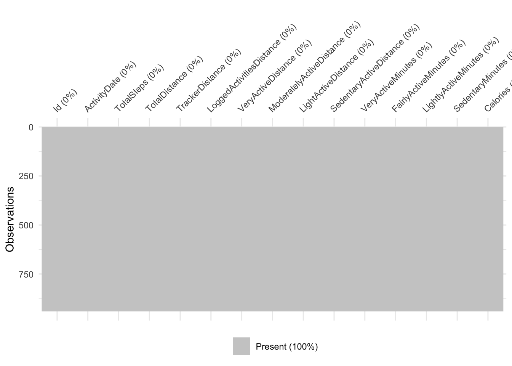
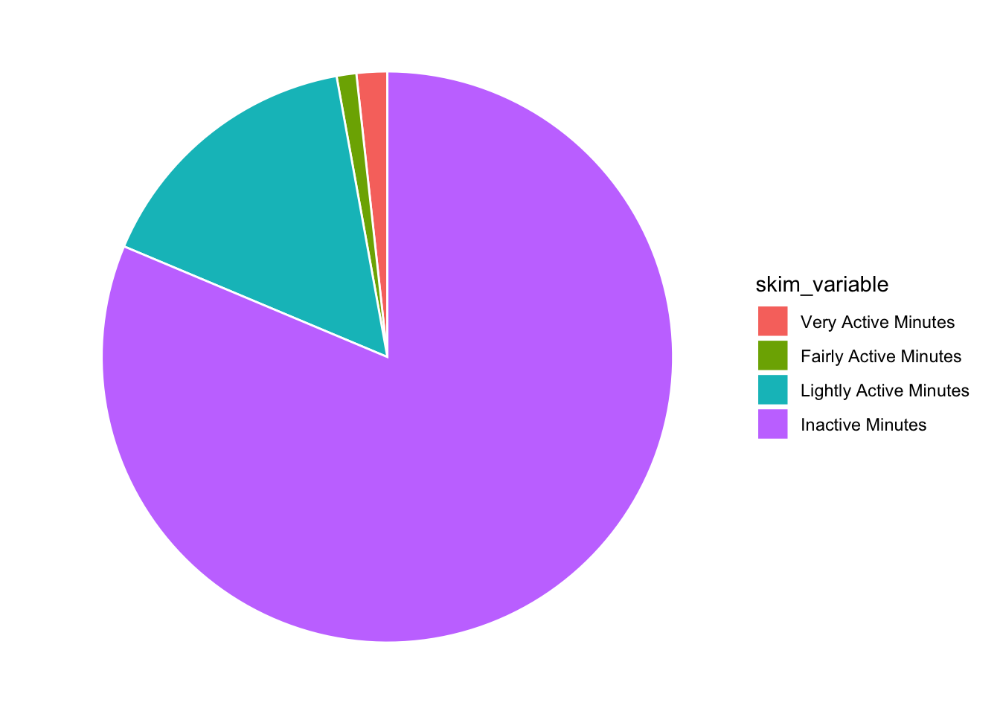
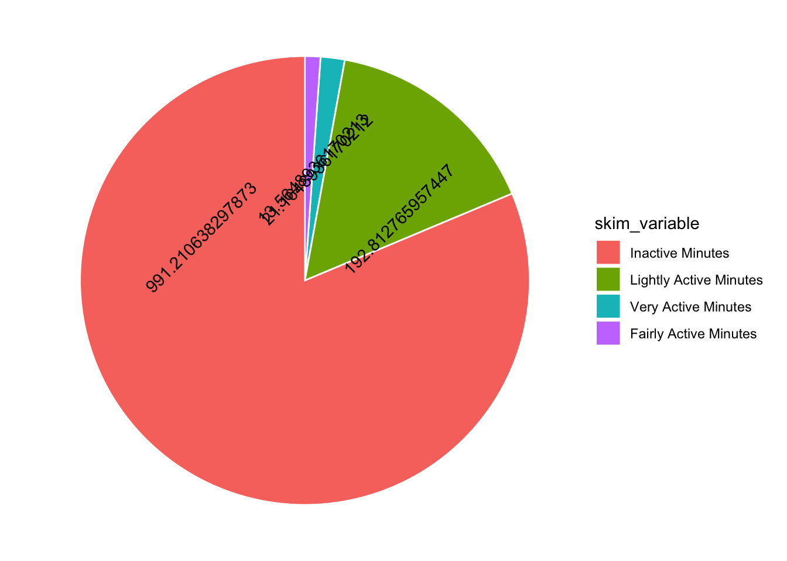
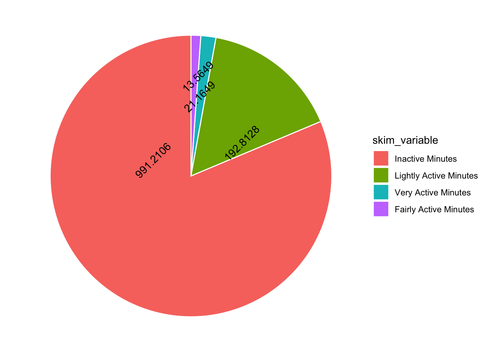
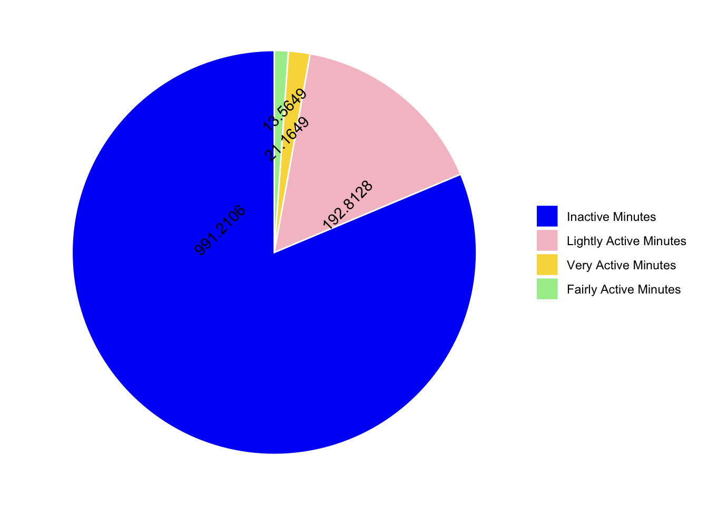
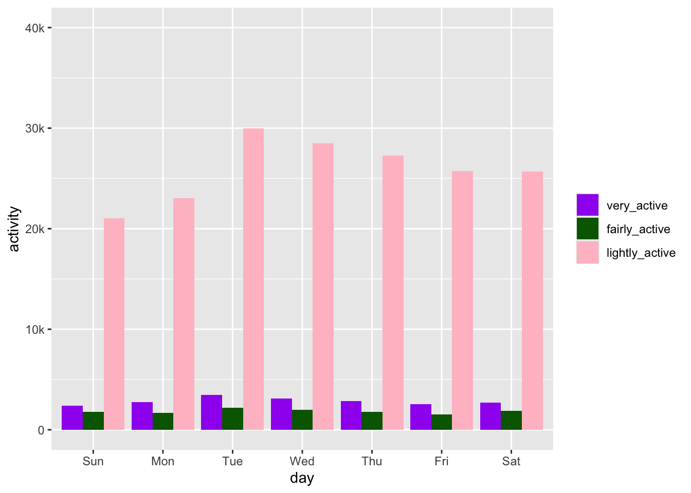

library(tidyverse)
library(here)
library(naniar)
library(lubridate)
library(skimr)
library(ggeasy)
library(gt)
library(janitor)analysing smartwatch data
Sometimes trying to replicate what someone is doing in a blogpost you find on twitter is a great way to learn something new. I am half heartedly thinking about trying to learn Python so when I saw this post about analysing smartwatch data on twitter I thought that it looked like interesting data and perhaps if I tried to do what they had done in R, that would be a useful way of starting to translate my R knowledge into python… maybe.
So here we go….
load packages
read in the data
df <- read_csv("dailyActivity_merged.csv")look at the first few rows
head(df)# A tibble: 6 × 15
Id ActivityDate TotalSteps TotalDistance TrackerDistance
<dbl> <chr> <dbl> <dbl> <dbl>
1 1503960366 4/12/2016 13162 8.5 8.5
2 1503960366 4/13/2016 10735 6.97 6.97
3 1503960366 4/14/2016 10460 6.74 6.74
4 1503960366 4/15/2016 9762 6.28 6.28
5 1503960366 4/16/2016 12669 8.16 8.16
6 1503960366 4/17/2016 9705 6.48 6.48
# ℹ 10 more variables: LoggedActivitiesDistance <dbl>,
# VeryActiveDistance <dbl>, ModeratelyActiveDistance <dbl>,
# LightActiveDistance <dbl>, SedentaryActiveDistance <dbl>,
# VeryActiveMinutes <dbl>, FairlyActiveMinutes <dbl>,
# LightlyActiveMinutes <dbl>, SedentaryMinutes <dbl>, Calories <dbl>check if there are NAs
A few ways to check NAs, the easiest uses naniar to visualise NAs with vis_miss()
vis_miss(df)
Alternatively you can use dplyr to summarise across the whole dataframe…
# using dplyr
df %>%
summarise(missing = sum(is.na(.)))# A tibble: 1 × 1
missing
<int>
1 0# or more simply w n_miss() from naniar
n_miss(df)[1] 0… or separately for each variable
# using dplyr
df %>%
summarise_all(funs(sum(is.na(.))))# A tibble: 1 × 15
Id ActivityDate TotalSteps TotalDistance TrackerDistance
<int> <int> <int> <int> <int>
1 0 0 0 0 0
# ℹ 10 more variables: LoggedActivitiesDistance <int>,
# VeryActiveDistance <int>, ModeratelyActiveDistance <int>,
# LightActiveDistance <int>, SedentaryActiveDistance <int>,
# VeryActiveMinutes <int>, FairlyActiveMinutes <int>,
# LightlyActiveMinutes <int>, SedentaryMinutes <int>, Calories <int># or more simply w miss_var_summary() from naniar
miss_var_summary(df)# A tibble: 15 × 3
variable n_miss pct_miss
<chr> <int> <num>
1 Id 0 0
2 ActivityDate 0 0
3 TotalSteps 0 0
4 TotalDistance 0 0
5 TrackerDistance 0 0
6 LoggedActivitiesDistance 0 0
7 VeryActiveDistance 0 0
8 ModeratelyActiveDistance 0 0
9 LightActiveDistance 0 0
10 SedentaryActiveDistance 0 0
11 VeryActiveMinutes 0 0
12 FairlyActiveMinutes 0 0
13 LightlyActiveMinutes 0 0
14 SedentaryMinutes 0 0
15 Calories 0 0Take home message: there are no missing values in this dataset.
look at data types
glimpse(df)Rows: 940
Columns: 15
$ Id <dbl> 1503960366, 1503960366, 1503960366, 150396036…
$ ActivityDate <chr> "4/12/2016", "4/13/2016", "4/14/2016", "4/15/…
$ TotalSteps <dbl> 13162, 10735, 10460, 9762, 12669, 9705, 13019…
$ TotalDistance <dbl> 8.50, 6.97, 6.74, 6.28, 8.16, 6.48, 8.59, 9.8…
$ TrackerDistance <dbl> 8.50, 6.97, 6.74, 6.28, 8.16, 6.48, 8.59, 9.8…
$ LoggedActivitiesDistance <dbl> 0, 0, 0, 0, 0, 0, 0, 0, 0, 0, 0, 0, 0, 0, 0, …
$ VeryActiveDistance <dbl> 1.88, 1.57, 2.44, 2.14, 2.71, 3.19, 3.25, 3.5…
$ ModeratelyActiveDistance <dbl> 0.55, 0.69, 0.40, 1.26, 0.41, 0.78, 0.64, 1.3…
$ LightActiveDistance <dbl> 6.06, 4.71, 3.91, 2.83, 5.04, 2.51, 4.71, 5.0…
$ SedentaryActiveDistance <dbl> 0, 0, 0, 0, 0, 0, 0, 0, 0, 0, 0, 0, 0, 0, 0, …
$ VeryActiveMinutes <dbl> 25, 21, 30, 29, 36, 38, 42, 50, 28, 19, 66, 4…
$ FairlyActiveMinutes <dbl> 13, 19, 11, 34, 10, 20, 16, 31, 12, 8, 27, 21…
$ LightlyActiveMinutes <dbl> 328, 217, 181, 209, 221, 164, 233, 264, 205, …
$ SedentaryMinutes <dbl> 728, 776, 1218, 726, 773, 539, 1149, 775, 818…
$ Calories <dbl> 1985, 1797, 1776, 1745, 1863, 1728, 1921, 203…The ActivityDate variable is characters so we need to convert that to date format
df <- df %>%
mutate(ActivityDate = mdy(ActivityDate))
class(df$ActivityDate)[1] "Date"make a new total minutes column
Lets mutate a new column that sums the activity minutes. We need to use rowwise here to let R know that we want to sum those values in each row.
df <- df %>%
rowwise() %>%
mutate(TotalMinutes = VeryActiveMinutes +FairlyActiveMinutes + LightlyActiveMinutes + SedentaryMinutes) %>%
ungroup() # remember to ungroup to make sure the next operation is not rowwisedescriptives
options(scipen = 99) # avoid scientific notation
descriptives <- df %>%
select(TotalSteps:TotalMinutes) %>%
skim()
gt(descriptives)| skim_type | skim_variable | n_missing | complete_rate | numeric.mean | numeric.sd | numeric.p0 | numeric.p25 | numeric.p50 | numeric.p75 | numeric.p100 | numeric.hist |
|---|---|---|---|---|---|---|---|---|---|---|---|
| numeric | TotalSteps | 0 | 1 | 7637.910638298 | 5087.150741753 | 0 | 3789.750 | 7405.500 | 10727.0000 | 36019.000000 | ▇▇▁▁▁ |
| numeric | TotalDistance | 0 | 1 | 5.489702122 | 3.924605909 | 0 | 2.620 | 5.245 | 7.7125 | 28.030001 | ▇▆▁▁▁ |
| numeric | TrackerDistance | 0 | 1 | 5.475351058 | 3.907275943 | 0 | 2.620 | 5.245 | 7.7100 | 28.030001 | ▇▆▁▁▁ |
| numeric | LoggedActivitiesDistance | 0 | 1 | 0.108170940 | 0.619896518 | 0 | 0.000 | 0.000 | 0.0000 | 4.942142 | ▇▁▁▁▁ |
| numeric | VeryActiveDistance | 0 | 1 | 1.502680851 | 2.658941165 | 0 | 0.000 | 0.210 | 2.0525 | 21.920000 | ▇▁▁▁▁ |
| numeric | ModeratelyActiveDistance | 0 | 1 | 0.567542551 | 0.883580319 | 0 | 0.000 | 0.240 | 0.8000 | 6.480000 | ▇▁▁▁▁ |
| numeric | LightActiveDistance | 0 | 1 | 3.340819149 | 2.040655388 | 0 | 1.945 | 3.365 | 4.7825 | 10.710000 | ▆▇▆▁▁ |
| numeric | SedentaryActiveDistance | 0 | 1 | 0.001606383 | 0.007346176 | 0 | 0.000 | 0.000 | 0.0000 | 0.110000 | ▇▁▁▁▁ |
| numeric | VeryActiveMinutes | 0 | 1 | 21.164893617 | 32.844803057 | 0 | 0.000 | 4.000 | 32.0000 | 210.000000 | ▇▁▁▁▁ |
| numeric | FairlyActiveMinutes | 0 | 1 | 13.564893617 | 19.987403954 | 0 | 0.000 | 6.000 | 19.0000 | 143.000000 | ▇▁▁▁▁ |
| numeric | LightlyActiveMinutes | 0 | 1 | 192.812765957 | 109.174699751 | 0 | 127.000 | 199.000 | 264.0000 | 518.000000 | ▅▇▇▃▁ |
| numeric | SedentaryMinutes | 0 | 1 | 991.210638298 | 301.267436790 | 0 | 729.750 | 1057.500 | 1229.5000 | 1440.000000 | ▁▁▇▅▇ |
| numeric | Calories | 0 | 1 | 2303.609574468 | 718.166862134 | 0 | 1828.500 | 2134.000 | 2793.2500 | 4900.000000 | ▁▆▇▃▁ |
| numeric | TotalMinutes | 0 | 1 | 1218.753191489 | 265.931767055 | 2 | 989.750 | 1440.000 | 1440.0000 | 1440.000000 | ▁▁▁▅▇ |
scatterplot
the goal

In the python plot they use a “ols” trendline but I don’t really know what that is so using “lm” instead. The graph in the post has the size of the points plotting very active minutes but there isn’t a legend on the plot, so I am using a function from ggeasy to remove the legend. Also worked out how to make the y axis be labelled 0 - 40k, rather than 0-40000 using the labels argument in scale_y_continuous.
df %>%
ggplot(aes(x = Calories, y = TotalSteps, size = VeryActiveMinutes)) +
geom_point(colour = "blue", alpha = 0.5) +
geom_smooth(method = "lm", se = FALSE) +
easy_remove_legend() +
scale_y_continuous(limits = c(0,40000), labels = c("0", "10k", "20k", "30k", "40k"))pie chart
the goal

The next graph in the blog post is a pie chart plotting the total active minutes in the 4 categories (inactive, lightly active, very active and fairly active). First I need to replicate these values. Luckily they are in the descriptives, so I am just going to select and filter everything else out of that dataframe.
tam <- descriptives %>%
select(skim_variable, numeric.mean) %>%
filter(skim_variable %in% c( "SedentaryMinutes", "LightlyActiveMinutes" , "FairlyActiveMinutes", "VeryActiveMinutes"))
gt(tam)| skim_variable | numeric.mean |
|---|---|
| VeryActiveMinutes | 21.16489 |
| FairlyActiveMinutes | 13.56489 |
| LightlyActiveMinutes | 192.81277 |
| SedentaryMinutes | 991.21064 |
OK first thing to “fix” are the labels on these categories. Inactive seems like a better label than Sedentary. Make the skim variable a factor first. Then use levels() to check that there are now levels. Then use fct_recode() to change the labels on the factor levels manually.
glimpse(tam)Rows: 4
Columns: 2
$ skim_variable <chr> "VeryActiveMinutes", "FairlyActiveMinutes", "LightlyActi…
$ numeric.mean <dbl> 21.16489, 13.56489, 192.81277, 991.21064tam <- tam %>%
mutate(skim_variable = as_factor(skim_variable))
levels(tam$skim_variable)[1] "VeryActiveMinutes" "FairlyActiveMinutes" "LightlyActiveMinutes"
[4] "SedentaryMinutes" tam <- tam %>%
mutate(skim_variable = fct_recode(skim_variable,
"Very Active Minutes" = "VeryActiveMinutes",
"Fairly Active Minutes" = "FairlyActiveMinutes",
"Lightly Active Minutes" = "LightlyActiveMinutes",
"Inactive Minutes" = "SedentaryMinutes"))
levels(tam$skim_variable)[1] "Very Active Minutes" "Fairly Active Minutes" "Lightly Active Minutes"
[4] "Inactive Minutes" There isn’t a geom_pie() in ggplot, probably because pie charts are the worst visualisation but you can make one by first making a stacked bar chart using geom_bar() and then adding coord_polar().
Good instructions available here https://r-graph-gallery.com/piechart-ggplot2.html
Bar graph version…
tam %>%
ggplot(aes(x="", y=numeric.mean, fill=skim_variable)) +
geom_bar(stat="identity") … add coord_polar()
tam %>%
ggplot(aes(x="", y=numeric.mean, fill=skim_variable)) +
geom_bar(stat="identity", color="white") +
coord_polar("y", start = 0) OK the bones are there but I really don’t want the axis labels or the grey background. Add theme_void() to get rid of those.
tam %>%
ggplot(aes(x="", y=numeric.mean, fill=skim_variable)) +
geom_bar(stat="identity", color="white") +
coord_polar("y", start = 0) +
theme_void()
Awesome, now in the post they have the legend ordered by the mean (with Inactive at the top). I think you can do that within a mutate, right before your data hits ggplot [see this post] (https://r-graph-gallery.com/267-reorder-a-variable-in-ggplot2.html).
tam %>%
mutate(skim_variable = fct_reorder(skim_variable, desc(numeric.mean))) %>%
ggplot(aes(x="", y=numeric.mean, fill=skim_variable)) +
geom_bar(stat="identity", color="white") +
coord_polar("y", start = 0) +
theme_void()And they have ridiculous number labels… in the spirit of reproducibility, lets do that too!
tam %>%
mutate(skim_variable = fct_reorder(skim_variable, desc(numeric.mean))) %>%
ggplot(aes(x="", y=numeric.mean, fill=skim_variable, label = numeric.mean)) +
geom_bar(stat="identity", color="white") +
coord_polar("y", start = 0) +
theme_void() +
geom_text(angle = 45)
Hmmmm I have overlapping numbers! I would be great to have more control over where the numbers go… I thought maybe ggannotate would help but it doesn’t work with polar coordinates. So I am stuck with position dodge. Adding a mutate to round the numbers also helps…
tam %>%
mutate(skim_variable = fct_reorder(skim_variable, desc(numeric.mean))) %>%
mutate(numeric.mean = round(numeric.mean, 4)) %>%
ggplot(aes(x="", y=numeric.mean, fill=skim_variable, label = numeric.mean)) +
geom_bar(stat="identity", color="white") +
coord_polar("y", start = 0) +
theme_void() +
geom_text(angle = 45, position = position_dodge(0.5))
Not terrible, what about colours?? The original post has blue, pink, yellow and green.
- blue 1 0 245 (#0100F5)
- pink 246 194 203 (#F6C2CB)
- yellow 249 217 73 (#F9D949)
- green 166 236 153 (#A6EC99)
I worked out how to use the Digital Colour Meter from Utilities on my Mac ot get the exact RGB codes for the colours in the graph using this resource.
Then used this RGB-Hex converter. I wonder if this step is necessary?? does ggplot know RGB codes??
Ahhh maybe not… but there is a rgb function, check this out!
rgb(1,0,245, maxColorValue = 255)[1] "#0100F5"rgb(246,194,203, maxColorValue = 255)[1] "#F6C2CB"rgb(249,217,73, maxColorValue = 255)[1] "#F9D949"rgb(166,236,153, maxColorValue = 255)[1] "#A6EC99"Adding in colours using scale_fill_manual() and removing the legend title with ggeasy.
tam %>%
mutate(skim_variable = fct_reorder(skim_variable, desc(numeric.mean))) %>%
mutate(numeric.mean = round(numeric.mean, 4)) %>%
ggplot(aes(x="", y=numeric.mean, fill=skim_variable, label = numeric.mean)) +
geom_bar(stat="identity", color="white") +
scale_fill_manual(values = c("#0100F5","#F6C2CB","#F9D949","#A6EC99")) +
coord_polar("y", start = 0) +
theme_void() +
geom_text(angle = 45, position = position_dodge(0.5)) +
easy_remove_legend_title()
Under the pie chart there are some summary stats…lets see if we can get those using inline code.
tam_wide <- tam %>%
pivot_wider(names_from = skim_variable, values_from = numeric.mean) %>%
clean_names() %>%
rowwise() %>%
mutate(total = very_active_minutes + fairly_active_minutes + lightly_active_minutes + inactive_minutes) %>%
pivot_longer(names_to = "category", values_to = "minutes", very_active_minutes:inactive_minutes) %>%
relocate(total, .after = minutes) %>%
mutate(percent = (minutes/total)*100) %>%
mutate(percent = round(percent, 1)) %>%
mutate(minutes = round(minutes, 0))Observations
- 81.3 of Total inactive minutes in a day
- 15.8 of Lightly active minutes in a day
- On an average, only 21 (1.7) were very active
- and 1.1 (14) of fairly active minutes in a day
column graph
the goal

Next up there is a column plot that looks at activity by day of the week. The lubridate package makes it easy to pull the day out of a date. I am going back to the original data frame and making a new one that includes just the id and activity date and the activity in minutes.
glimpse(df)Rows: 940
Columns: 16
$ Id <dbl> 1503960366, 1503960366, 1503960366, 150396036…
$ ActivityDate <date> 2016-04-12, 2016-04-13, 2016-04-14, 2016-04-…
$ TotalSteps <dbl> 13162, 10735, 10460, 9762, 12669, 9705, 13019…
$ TotalDistance <dbl> 8.50, 6.97, 6.74, 6.28, 8.16, 6.48, 8.59, 9.8…
$ TrackerDistance <dbl> 8.50, 6.97, 6.74, 6.28, 8.16, 6.48, 8.59, 9.8…
$ LoggedActivitiesDistance <dbl> 0, 0, 0, 0, 0, 0, 0, 0, 0, 0, 0, 0, 0, 0, 0, …
$ VeryActiveDistance <dbl> 1.88, 1.57, 2.44, 2.14, 2.71, 3.19, 3.25, 3.5…
$ ModeratelyActiveDistance <dbl> 0.55, 0.69, 0.40, 1.26, 0.41, 0.78, 0.64, 1.3…
$ LightActiveDistance <dbl> 6.06, 4.71, 3.91, 2.83, 5.04, 2.51, 4.71, 5.0…
$ SedentaryActiveDistance <dbl> 0, 0, 0, 0, 0, 0, 0, 0, 0, 0, 0, 0, 0, 0, 0, …
$ VeryActiveMinutes <dbl> 25, 21, 30, 29, 36, 38, 42, 50, 28, 19, 66, 4…
$ FairlyActiveMinutes <dbl> 13, 19, 11, 34, 10, 20, 16, 31, 12, 8, 27, 21…
$ LightlyActiveMinutes <dbl> 328, 217, 181, 209, 221, 164, 233, 264, 205, …
$ SedentaryMinutes <dbl> 728, 776, 1218, 726, 773, 539, 1149, 775, 818…
$ Calories <dbl> 1985, 1797, 1776, 1745, 1863, 1728, 1921, 203…
$ TotalMinutes <dbl> 1094, 1033, 1440, 998, 1040, 761, 1440, 1120,…day <- df %>%
clean_names() %>%
select(id:activity_date, very_active_minutes:calories) %>%
mutate(day = wday(activity_date, label = TRUE)) %>%
rename(inactive_minutes = sedentary_minutes) %>%
pivot_longer(names_to = "category", values_to = "minutes", very_active_minutes:inactive_minutes) %>%
mutate(category = str_sub(category, end = -9)) %>%
mutate(category = fct_relevel(category, c("very_active", "fairly_active", "lightly_active", "inactive")))
day %>%
filter(category != "inactive") %>%
group_by(day, category) %>%
summarise(activity = sum(minutes)) %>%
ggplot(aes(x = day, y = activity, fill = category)) +
geom_col(position = "dodge") +
scale_fill_manual(values = c("purple", "darkgreen", "pink")) +
scale_y_continuous(limits = c(0,40000), labels = c("0", "10k", "20k", "30k", "40k")) +
easy_remove_legend_title()`summarise()` has grouped output by 'day'. You can override using the `.groups`
argument.